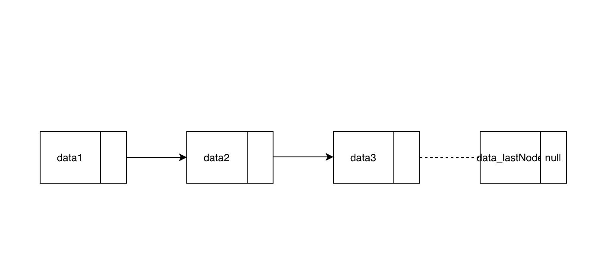

What is Linked List
A linked list is a linear data structure for storing collections of data.
How Linked List works (briefly)
- Linked list is a linear data structure means elements are accessed in sequential order
- Memory is not allocated sequentially or as one single memory block.
- Successive elements are connected by pointers. So for traversing the list, one should go by pointers which lead to the next node/entry.
- Last element in the list points to
null
For detailed explanation of internal working of Linked list follow this link
Advantages of Linked List
- Linked lists can be extended any time which means every time user wants to add an element to the Linked list, we just need to add that element at the mentioned location. In the case of ArrayLists, to expand the array list, it will create a bigger empty array list and copies the current list to the newly created list.
- Insertion or deletion of entry at the beginning will take a constant amount of time O(1).
Disadvantages of Linked List
- Traversing through the list takes O(n) times unlike Array list takes constant time (O(1))
- For deleting the last element in the linked list it takes O(n) times, as to traverse to the
second last node to make its pointer to
null - Linked list wastes memory in terms of extra reference pointers.
I hope the above article helps. Please let me know in the comments if anything to add.